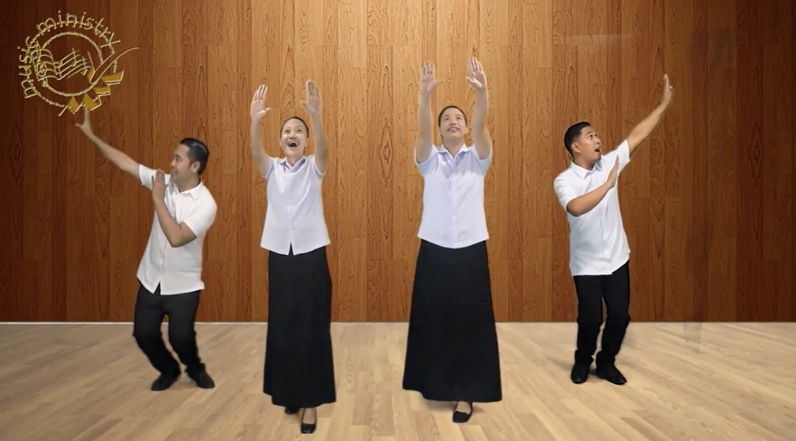
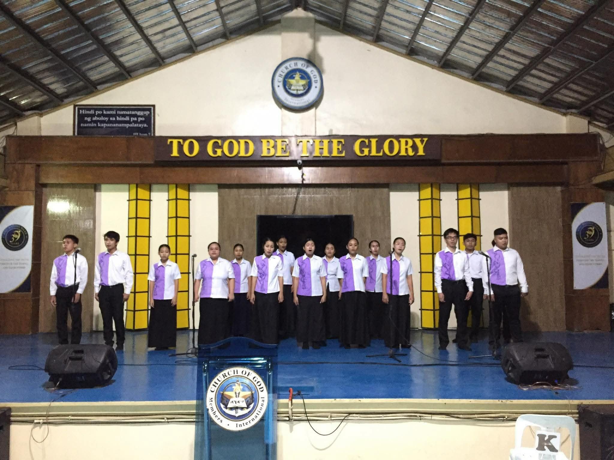
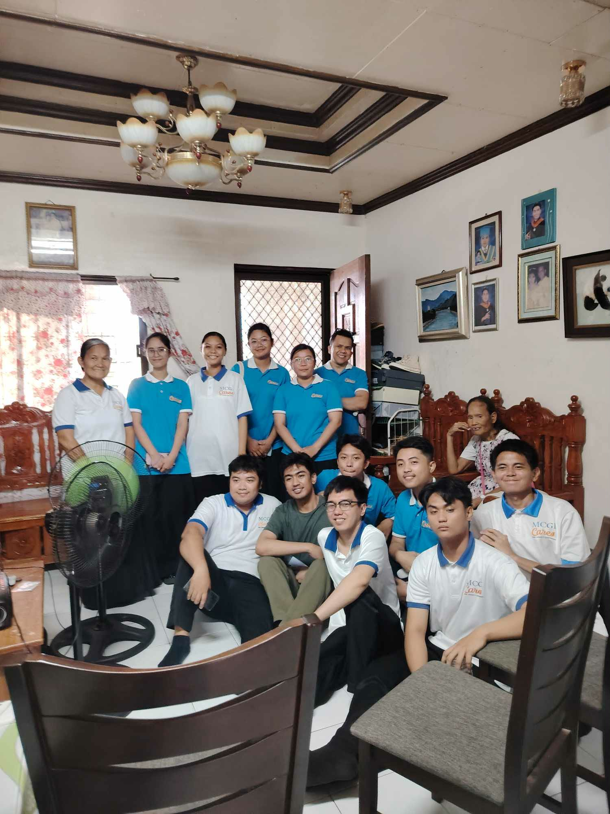
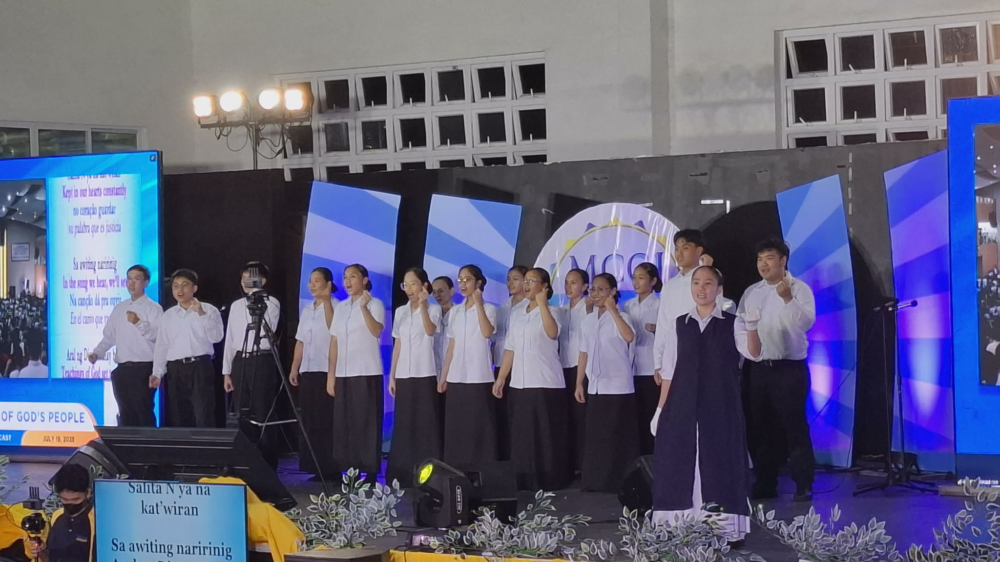
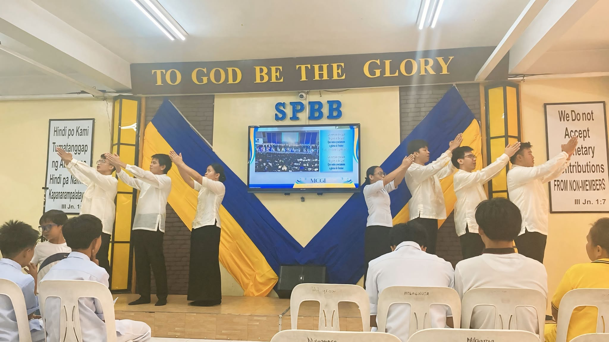

The Steps and Process of Pagsulong
A clear path from first inquiry to full active duty in the MCGI Youth Music Ministry.
Initial Inquiry: If you wish to join the MCGI Youth Music
Ministry, please approach any choir officer so they can assist
you. This is the first step to joining.
Hakbang 1 · Pagtatanong:
Sa mga nagnanais makasama at makabahagi sa Laguna West MCGI Youth Music Ministry,
maari po kayong lumapit sa mga choir officers upang
ma-assist kayo. Ito po ang unang hakbang ng pagsali.
Orientation: Before beginning formal training, aspirants must
undergo an orientation to understand the bylaws and duties
of music ministry.
Hakbang 2 · Oryentasyon:
Bago ang pagsasanay, ang mga nagnanais ay dadaan muna sa
oryentasyon upang maunawaan ang mga tungkulin at mga gawainng
ministeryo.
Training & Preparation: Aspirants undergo training to prepare for the duty of leading the
congregation singing.
Hakbang 3 · Pagsasanay at Paghahanda:
Sasailalim sa masusing pagsasanay sa musika upang maghanda sa tungkulin ng pag-akay sa
awitan.

Special Assignments: Participation in specialized activities
like 24/7 Singing (continuous singing of praises) and Harana.
Hakbang 4 · Espesyal na Gawain:
Pakikibahagi sa mga gawain gaya ng 24/7 Singing (walang
patid na awitan) at Harana (dalaw sa kapatid).


The Pagsulong Ceremony: A formal commencement event where
trainees are officially promoted to become regular members of
the Chorale.
Hakbang 5 · Seremonya ng Pagsulong:
Isang pormal na seremonya ng pagtatapos kung saan ang mga
trainee ay opisyal nang itinaas bilang regular na miyembro
ng Chorale.

Full Active Duty: Newly advanced members are integrated into
core services: Prayer Meetings, Worship, and Weekly
Thanksgivings.
Hakbang 6 · Aktibong Paglilingkod:
Ang mga bagong "sulong" ay kaisa na sa mga pagkakatipon:
Prayer Meeting, Pagsamba, at Pasalamat ng Buong Kapatiran.

